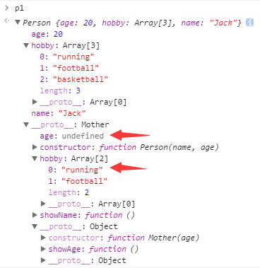
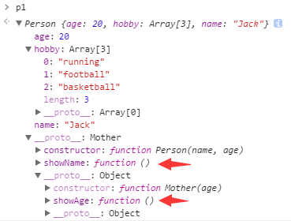
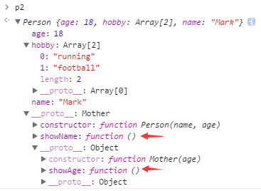

（点击上方公众号，可快速关注）
作者：茄果
链接：http://www.cnblogs.com/qieguo/archive/2016/05/03/5451626.html
原型链理解起来有点绕了，网上资料也是很多，每次晚上睡不着的时候总喜欢在网上找点原型链和闭包的文章看，效果极好。
不要纠结于那一堆术语了，那除了让你脑筋拧成麻花，真的不能帮你什么。简单粗暴点看原型链吧，想点与代码无关的事，比如人、妖以及人妖。
1）人是人他妈生的，妖是妖他妈生的。人和妖都是对象实例，而人他妈和妖他妈就是原型。原型也是对象，叫原型对象。
2）人他妈和人他爸啪啪啪能生出一堆人宝宝、妖他妈和妖他爸啪啪啪能生出一堆妖宝宝，啪啪啪就是构造函数，俗称造人。
3）人他妈会记录啪啪啪的信息，所以可以通过人他妈找到啪啪啪的信息，也就是说能通过原型对象找到构造函数。
4）人他妈可以生很多宝宝，但这些宝宝只有一个妈妈，这就是原型的唯一性。
5）人他妈也是由人他妈他妈生的，通过人他妈找到人他妈他妈，再通过人他妈他妈找到人他妈他妈……，这个关系叫做原型链。
6）原型链并不是无限的，当你通过人他妈一直往上找，最后发现你会发现人他妈他妈他妈……的他妈都不是人，也就是原型链最终指向null。
7）人他妈生的人会有人的样子，妖他妈生的妖会有妖的丑陋，这叫继承。
8）你继承了你妈的肤色，你妈继承了你妈他妈的肤色，你妈他妈……，这就是原型链的继承。
9）你谈对象了，她妈让你带上房产证去提货，你若没有，那她妈会问你妈有没有，你妈没有那她妈会问你妈她妈有没有……这就是原型链的向上搜索。
10）你会继承你妈的样子，但是你也可以去染发洗剪吹，就是说对象的属性可以自定义，会覆盖继承得到的属性。
11）虽然你洗剪吹了染成黄毛了，但你不能改变你妈的样子，你妈生的弟弟妹妹跟你的黄毛洗剪吹没一点关系，就是说对象实例不能改动原型的属性。
12）但是你家被你玩火烧了的话，那就是说你家你妈家你弟们家都被烧了，这就是原型属性的共享。
13）你妈外号阿珍，邻居大娘都叫你阿珍儿，但你妈头发从飘柔做成了金毛狮王后，隔壁大婶都改口叫你包租仔，这叫原型的动态性。
14）你妈爱美，又跑到韩国整形，整到你妈他妈都认不出来，即使你妈头发换回飘柔了，但隔壁邻居还是叫你金毛狮王子。因为没人认出你妈，整形后的你妈已经回炉再造了，这就是原型的整体重写。
尼玛！你特么也是够了！ Don’t BB！ Show me the code！
function Person (name) { this.name = name; }
function Mother () { }
Mother.prototype = { //Mother的原型
age: 18,
home: ['Beijing', 'Shanghai']
};
Person.prototype = new Mother(); //Person的原型为Mother
//用chrome调试工具查看，提供了__proto__接口查看原型，这里有两层原型，各位还是直接看chrome好一点。
var p1 = new Person('Jack'); //p1:'Jack'; __proto__:{__proto__:18,['Beijing','Shanghai']}
var p2 = new Person('Mark'); //p2:'Mark'; __proto__:{__proto__:18,['Beijing','Shanghai']}
p1.age = 20;
/* 实例不能改变原型的基本值属性，正如你洗剪吹染黄毛跟你妈无关
* 在p1实例下增加一个age属性的普通操作，与原型无关。跟var o={}; o.age=20一样。
* p1：下面多了个属性age，而__proto__跟 Mother.prototype一样，age=18。
* p2：只有属性name，__proto__跟 Mother.prototype一样
*/
p1.home[0] = 'Shenzhen';
/* 原型中引用类型属性的共享，正如你烧了你家，就是烧了你全家的家
* 这个先过，下文再仔细唠叨一下可好？
* p1：'Jack',20; __proto__:{__proto__:18,['Shenzhen','Shanghai']}
* p2：'Mark'; __proto__:{__proto__:18,['Shenzhen','Shanghai']}
*/
p1.home = ['Hangzhou', 'Guangzhou'];
/* 其实跟p1.age=20一样的操作。换成这个理解: var o={}; o.home=['big','house']
* p1：'Jack',20,['Hangzhou','Guangzhou']; __proto__:{__proto__:18,['Shenzhen','Shanghai']}
* p2：'Mark'; __proto__:{__proto__:18,['Shenzhen','Shanghai']}
*/
delete p1.age;
/* 删除实例的属性之后，原本被覆盖的原型值就重见天日了。正如你剃了光头，遗传的迷人小卷发就长出来了。
* 这就是向上搜索机制，先搜你，然后你妈，再你妈他妈，所以你妈的改动会动态影响你。
* p1：'Jack',['Hangzhou','Guangzhou']; __proto__:{__proto__:18,['Shenzhen','Shanghai']}
* p2：'Mark'; __proto__:{__proto__:18,['Shenzhen','Shanghai']}
*/
Person.prototype.lastName = 'Jin';
/* 改写原型，动态反应到实例中。正如你妈变新潮了，邻居提起你都说你妈真潮。
* 注意，这里我们改写的是Person的原型，就是往Mother里加一个lastName属性，等同于Mother.lastName='Jin'
* 这里并不是改Mother.prototype，改动不同的层次，效果往往会有很大的差异。
* p1：'Jack',['Hangzhou','Guangzhou']; __proto__:{'jin',__proto__:18,['Shenzhen','Shanghai']}
* p2：'Mark'; __proto__:{'jin',__proto__:18,['Shenzhen','Shanghai']}
*/
Person.prototype = {
age: 28,
address: { country: 'USA', city: 'Washington' }
};
var p3 = new Person('Obama');
/* 重写原型！这个时候Person的原型已经完全变成一个新的对象了，也就是说Person换了个妈，叫后妈。
* 换成这样理解：var a=10; b=a; a=20; c=a。所以b不变，变得是c，所以p3跟着后妈变化，与亲妈无关。
* p1：'Jack',['Hangzhou','Guangzhou']; __proto__:{'jin',__proto__:18,['Shenzhen','Shanghai']}
* p2：'Mark'; __proto__:{'jin',__proto__:18,['Shenzhen','Shanghai']}
* p3:'Obama';__proto__: 28 {country: 'USA', city: 'Washington'}
*/
Mother.prototype.no = 9527;
/* 改写原型的原型，动态反应到实例中。正如你妈他妈变新潮了，邻居提起你都说你丫外婆真潮。
* 注意，这里我们改写的是Mother.prototype，p1p2会变，但上面p3跟亲妈已经了无瓜葛了，不影响他。
* p1：'Jack',['Hangzhou','Guangzhou']; __proto__:{'jin',__proto__:18,['Shenzhen','Shanghai'],9527}
* p2：'Mark'; __proto__:{'jin',__proto__:18,['Shenzhen','Shanghai'],9527}
* p3:'Obama';__proto__: 28 {country: 'USA', city: 'Washington'}
*/
Mother.prototype = {
car: 2,
hobby: ['run','walk']
};
var p4 = new Person('Tony');
/* 重写原型的原型！这个时候Mother的原型已经完全变成一个新的对象了！人他妈换了个后妈！
* 由于上面Person与Mother已经断开联系了，这时候Mother怎么变已经不影响Person了。
* p4:'Tony';__proto__: 28 {country: 'USA', city: 'Washington'}
*/
Person.prototype = new Mother(); //再次绑定
var p5 = new Person('Luffy');
// 这个时候如果需要应用这些改动的话，那就要重新将Person的原型绑到mother上了
// p5:'Luffy';__proto__:{__proto__: 2, ['run','walk']}
p1.__proto__.__proto__.__proto__.__proto__ //null，你说原型链的终点不是null？
Mother.__proto__.__proto__.__proto__ //null，你说原型链的终点不是null？
看完基本能理解了吧？
现在再来说说 p1.age = 20、p1.home = [‘Hangzhou’, ‘Guangzhou’] 和 p1.home[0] = ‘Shenzhen’ 的区别。 p1.home[0] = ‘Shenzhen’; 总结一下是 p1.object.method，p1.object.property 这样的形式。
p1.age = 20; p1.home = [‘Hangzhou’, ‘Guangzhou’];这两句还是比较好理解的，先忘掉原型吧，想想我们是怎么为一个普通对象增加属性的：
var obj = new Object();
obj.name='xxx';
obj.num = [100, 200];
这样是不是就理解了呢？一样一样的呀。
那为什么 p1.home[0] = ‘Shenzhen’ 不会在 p1 下创建一个 home 数组属性，然后将其首位设为 ‘Shenzhen’呢？ 我们还是先忘了这个，想想上面的obj对象，如果写成这样： var obj.name = ‘xxx’, obj.num = [100, 200]，能得到你要的结果吗？ 显然，除了报错你什么都得不到。因为obj还未定义，又怎么能往里面加入东西呢？同理，p1.home[0]中的 home 在 p1 下并未被定义，所以也不能直接一步定义 home[0] 了。如果要在p1下创建一个 home 数组，当然是这么写了：
p1.home = [];
p1.home[0] = 'Shenzhen';
这不就是我们最常用的办法吗？
而之所以 p1.home[0] = ‘Shenzhen’ 不直接报错，是因为在原型链中有一个搜索机制。当我们输入 p1.object 的时候，原型链的搜索机制是先在实例中搜索相应的值，找不到就在原型中找，还找不到就再往上一级原型中搜索……一直到了原型链的终点，就是到null还没找到的话，就返回一个 undefined。当我们输入 p1.home[0] 的时候，也是同样的搜索机制，先搜索 p1 看有没有名为 home 的属性和方法，然后逐级向上查找。最后我们在Mother的原型里面找到了，所以修改他就相当于修改了 Mother 的原型啊。
一句话概括：p1.home[0] = ‘Shenzhen’ 等同于 Mother.prototype.home[0] = ‘Shenzhen’。
由上面的分析可以知道，原型链继承的主要问题在于属性的共享，很多时候我们只想共享方法而并不想要共享属性，理想中每个实例应该有独立的属性。因此，原型继承就有了下面的两种改良方式：
1）组合继承
function Mother (age) {
this.age = age;
this.hobby = ['running','football']
}
Mother.prototype.showAge = function () {
console.log(this.age);
};
function Person (name, age) {
Mother.call(this, age); //第二次执行
this.name = name;
}
Person.prototype = new Mother(); //第一次执行
Person.prototype.constructor = Person;
Person.prototype.showName = function () {
console.log(this.name);
}
var p1 = new Person('Jack', 20);
p1.hobby.push('basketball'); //p1:'Jack'; __proto__:20,['running','football']
var p2 = new Person('Mark', 18); //p2:'Mark'; __proto__:18,['running','football']
结果是酱紫的：

这里第一次执行的时候，得到 Person.prototype.age = undefined, Person.prototype.hobby = [‘running’,’football’]，第二次执行也就是 var p1 = new Person(‘Jack’, 20) 的时候，得到 p1.age =20, p1.hobby = [‘running’,’football’]，push后就变成了 p1.hobby = [‘running’,’football’, ‘basketball’]。其实分辨好 this 的变化，理解起来也是比较简单的，把 this 简单替换一下就能得到这个结果了。 如果感觉理解起来比较绕的话，试着把脑子里面的概念扔掉吧，把自己当浏览器从上到下执行一遍代码，结果是不是就出来了呢？
通过第二次执行原型的构造函数 Mother()，我们在对象实例中复制了一份原型的属性，这样就做到了与原型属性的分离独立。细心的你会发现，我们第一次调用 Mother()，好像什么用都没有呢，能不调用他吗？可以，就有了下面的寄生组合式继承。
2）寄生组合式继承
function object(o){
function F(){}
F.prototype = o;
return new F();
}
function inheritPrototype(Person, Mother){
var prototype = object(Mother.prototype);
prototype.constructor = Person;
Person.prototype = prototype;
}
function Mother (age) {
this.age = age;
this.hobby = ['running','football']
}
Mother.prototype.showAge = function () {
console.log(this.age);
};
function Person (name, age) {
Mother.call(this, age);
this.name = name;
}
inheritPrototype(Person, Mother);
Person.prototype.showName = function () {
console.log(this.name);
}
var p1 = new Person('Jack', 20);
p1.hobby.push('basketball');//p1:'Jack'; __proto__:20,['running','football']
var p2 = new Person('Mark', 18); //p2:'Mark'; __proto__:18,['running','football']
结果是酱紫的：


原型中不再有 age 和 hobby 属性了，只有两个方法，正是我们想要的结果！
关键点在于 object(o) 里面，这里借用了一个临时对象来巧妙避免了调用new Mother()，然后将原型为 o 的新对象实例返回，从而完成了原型链的设置。很绕，对吧，那是因为我们不能直接设置 Person.prototype = Mother.prototype 啊。
小结
说了这么多，其实核心只有一个：属性共享和独立的控制，当你的对象实例需要独立的属性，所有做法的本质都是在对象实例里面创建属性。若不考虑太多，你大可以在Person里面直接定义你所需要独立的属性来覆盖掉原型的属性。总之，使用原型继承的时候，要对于原型中的属性要特别注意，因为他们都是牵一发而动全身的存在。
下面简单罗列下js中创建对象的各种方法，现在最常用的方法是组合模式，熟悉的同学可以跳过到文章末尾点赞了。
1）原始模式
//1.原始模式，对象字面量方式
var person = {
name: 'Jack',
age: 18,
sayName: function () { alert(this.name); }
};
//1.原始模式，Object构造函数方式
var person = new Object();
person.name = 'Jack';
person.age = 18;
person.sayName = function () {
alert(this.name);
};
显然，当我们要创建批量的person1、person2……时，每次都要敲很多代码，资深copypaster都吃不消！然后就有了批量生产的工厂模式。
2）工厂模式
//2.工厂模式，定义一个函数创建对象
function creatPerson (name, age) {
var person = new Object();
person.name = name;
person.age = age;
person.sayName = function () {
alert(this.name);
};
return person;
}
工厂模式就是批量化生产，简单调用就可以进入造人模式（啪啪啪……）。指定姓名年龄就可以造一堆小宝宝啦，解放双手。但是由于是工厂暗箱操作的，所以你不能识别这个对象到底是什么类型、是人还是狗傻傻分不清（instanceof 测试为 Object），另外每次造人时都要创建一个独立的temp对象，代码臃肿，雅蠛蝶啊。
3）构造函数
//3.构造函数模式，为对象定义一个构造函数
function Person (name, age) {
this.name = name;
this.age = age;
this.sayName = function () {
alert(this.name);
};
}
var p1 = new Person('Jack', 18); //创建一个p1对象
Person('Jack', 18); //属性方法都给window对象，window.name='Jack'，window.sayName()会输出Jack
构造函数与C++、JAVA中类的构造函数类似，易于理解，另外Person可以作为类型识别（instanceof 测试为 Person 、Object）。但是所有实例依然是独立的，不同实例的方法其实是不同的函数。这里把函数两个字忘了吧，把sayName当做一个对象就好理解了，就是说张三的 sayName 和李四的 sayName是不同的存在，但显然我们期望的是共用一个 sayName 以节省内存。
4）原型模式
//4.原型模式，直接定义prototype属性
function Person () {}
Person.prototype.name = 'Jack';
Person.prototype.age = 18;
Person.prototype.sayName = function () { alert(this.name); };
//4.原型模式，字面量定义方式
function Person () {}
Person.prototype = {
name: 'Jack',
age: 18,
sayName: function () { alert(this.name); }
};
var p1 = new Person(); //name='Jack'
var p2 = new Person(); //name='Jack'
这里需要注意的是原型属性和方法的共享，即所有实例中都只是引用原型中的属性方法，任何一个地方产生的改动会引起其他实例的变化。
5）混合模式（构造+原型）
//5. 原型构造组合模式，
function Person (name, age) {
this.name = name;
this.age = age;
}
Person.prototype = {
hobby: ['running','football'];
sayName: function () { alert(this.name); },
sayAge: function () { alert(this.age); }
};
var p1 = new Person('Jack', 20);
//p1:'Jack',20; __proto__: ['running','football'],sayName,sayAge
var p2 = new Person('Mark', 18);
//p1:'Mark',18;__proto__: ['running','football'],sayName,sayAge
做法是将需要独立的属性方法放入构造函数中，而可以共享的部分则放入原型中，这样做可以最大限度节省内存而又保留对象实例的独立性。
【今日微信公号推荐↓】
更多推荐请看《值得关注的技术和设计公众号》
其中推荐了包括技术、设计、极客 和 IT相亲相关的热门公众号。技术涵盖：Python、Web前端、Java、安卓、iOS、PHP、C/C++、.NET、Linux、数据库、运维、大数据、算法、IT职场等。点击《值得关注的技术和设计公众号》，发现精彩！
点击阅读原文，了解野狗
![]()